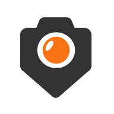

ViewPin
사진가를 위한 출사지(사진 촬영 장소) 지도 · 출사 계획 앱
1. 서비스 개요
| 서비스 형태 | 모바일 앱(Android · iOS). 웹 서비스는 없으며, 이 페이지가 서비스 소개 · 정책 안내 페이지입니다. |
|---|---|
| 업종 · 콘텐츠 | 사진 · 여행 정보 공유 커뮤니티. 이용자가 직접 찍은 풍경 사진과 촬영 장소, 촬영 정보(촬영 시간대 · 카메라 설정 · 주차장 · 물때 · 드론 비행 참고 정보)를 지도 위에 공유하고, 개인 출사 계획을 세우는 서비스입니다. |
| 이용 대상 | 만 14세 이상 일반 이용자(사진 촬영 · 여행에 관심 있는 사람) |
| 요금 | 기본 기능 무료. 출시 시 일부 편의 기능(출사 계획 계정에 저장 등)을 앱 마켓(Google Play · App Store) 인앱 구독으로 제공할 예정입니다. |
| 전자상거래 여부 | 해당 없음. 상품 판매 · 예약 · 청약 · 중개 기능이 없습니다. |
| 진행 상태 | 개발 완료 후 비공개 베타 테스트 중이며, Google Play · App Store 출시를 준비하고 있습니다. |
2. 네이버 로그인 사용 목적
| 사용 위치 | 앱 첫 화면의 '네이버로 계속하기' 버튼(구글 · 애플 로그인과 함께 제공). 설정 > 연결된 계정에서 기존 계정에 네이버를 연결할 수도 있습니다. |
|---|---|
| 받는 정보 | 이메일 주소, 별명(닉네임), 네이버 회원 식별값 |
| 이용 목적 | 회원 식별 · 로그인, 프로필의 기본 이름(이용자가 언제든 바꿀 수 있음). 프로필 사진 등 그 밖의 정보는 받지 않습니다. |
| 탈퇴 | 앱 설정 > 회원 탈퇴 시 계정과 연결 정보가 즉시 삭제됩니다. |
3. 메뉴별 기능
⑧ 그 밖의 메뉴
- 알림: 내 게시물 좋아요, 새 팔로워, 팔로우한 작가의 새 게시물, 운영자 공지, 문의 답변
- 북마크 · 팔로우: 저장한 게시물과 팔로우한 작가 목록
- 프로필: 내 사진 모음, 프로필 이름 · 사진 편집
- 설정: 선호 카테고리, 알림, 사용 통계, 화면 테마, 언어(한국어 · English · 日本語 · 繁體中文), 권한, 연결된 계정, 차단한 사용자, 회원 탈퇴
- 문의: 앱에서 운영자에게 문의를 보내고 답변을 받습니다.
- 운영 · 신고 처리: 신고된 게시물은 운영자가 확인해 숨기거나 삭제하며, 서로 다른 3명 이상이 신고하면 자동으로 숨겨집니다.
4. 정책 · 문의
문의: viewpin.support@gmail.com
화면은 개발 중인 앱(베타)이며 출시 전에 일부 바뀔 수 있습니다.